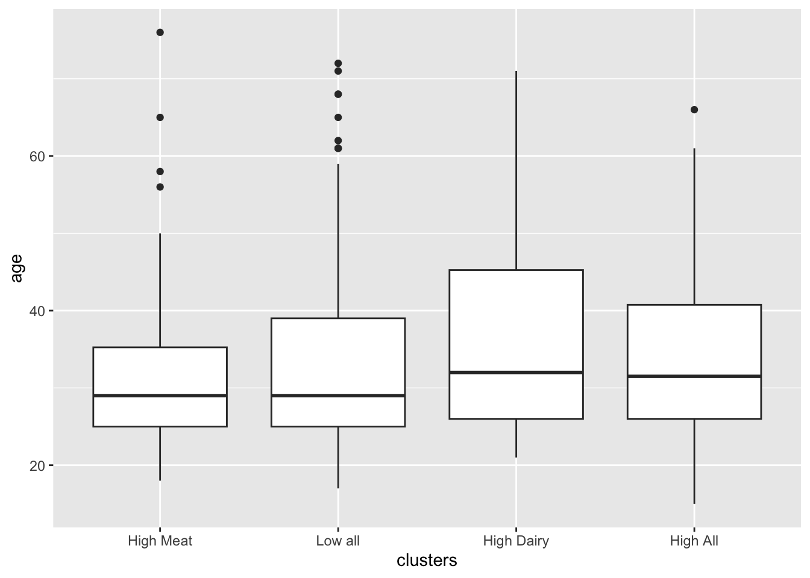
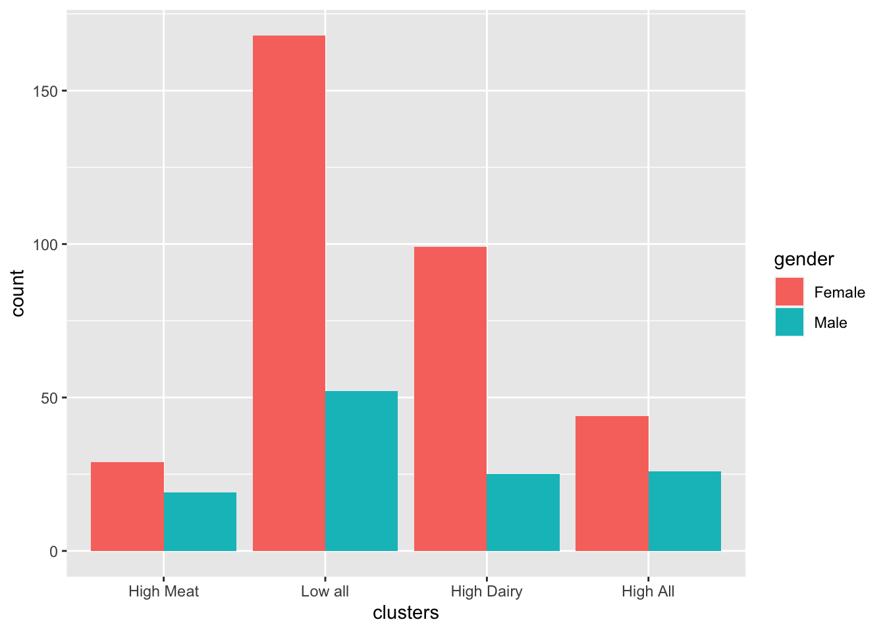
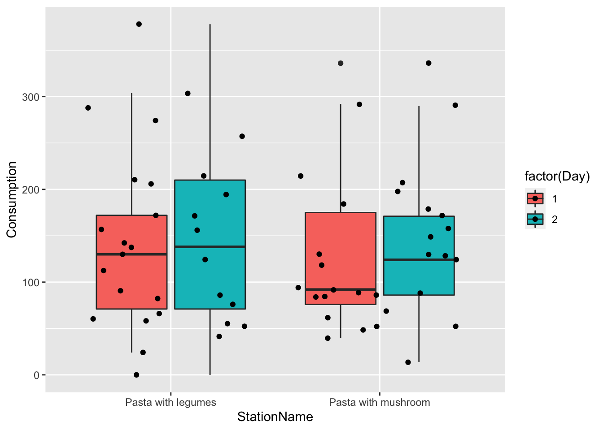
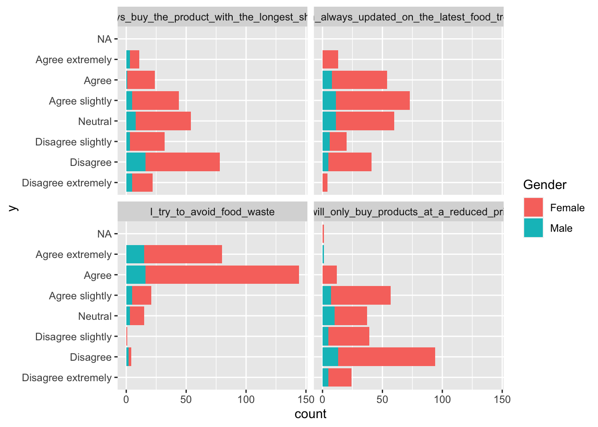

Chapter 4 Descriptive statistics and plotting
load('iBuffetSurveyData.RData')4.1 Distributions of count data
The table function is good in getting how many observations there are within a given vector, or combinations of several vectors.
Here used on the Survey answers.
table(Surveylong$answ) # across everything##
## A. Strongly disagree B. Disagree C. More or less disagree D. Neither agree nor disagree E. More or less agree
## 0 2 6 7 21
## F. Agree G. Strongly agree
## 32 52table(Surveylong$question,Surveylong$answ ) # across question##
## A. Strongly disagree B. Disagree C. More or less disagree D. Neither agree nor disagree
## I like the taste of pasta with legumes! 0 1 3 2
## I like the taste of pasta with mushrooms! 0 0 0 0
## Pasta with legumes is visually appealing to me. 0 1 3 3
## Pasta with mushrooms is visually appealing to me. 0 0 0 2
##
## E. More or less agree F. Agree G. Strongly agree
## I like the taste of pasta with legumes! 5 8 11
## I like the taste of pasta with mushrooms! 4 11 15
## Pasta with legumes is visually appealing to me. 6 7 10
## Pasta with mushrooms is visually appealing to me. 6 6 16You see that most of the answers are in agreement with question, and that there are no observations in the Strongly disagree category.
The tidyverse way
Lets do exactly the same just using tidyverse functions count(), group_by(), mutate(), and summarise().
Further, lets print the results in a nice looking table using kable() from the knitr package.
# tb <- Surveylong %>%
# count(question,answ,Day,name = "no_rows", .drop = F)
# kable(tb, caption = 'some caption')The numbers are absolute, but may be better represented by proportions.
tb <- Surveylong %>%
group_by(question,Day) %>%
dplyr::mutate(ntot = n()) %>%
group_by(question,answ,Day) %>%
dplyr::summarise(n = n(),
prc = 100*n / ntot[1])## `summarise()` has grouped output by 'question', 'answ'. You can override using the `.groups` argument.kable(tb, caption = 'some caption', digits = 1)| question | answ | Day | n | prc |
|---|---|---|---|---|
| I like the taste of pasta with legumes! | B. Disagree | 1 | 1 | 6.7 |
| I like the taste of pasta with legumes! | C. More or less disagree | 2 | 3 | 20.0 |
| I like the taste of pasta with legumes! | D. Neither agree nor disagree | 1 | 1 | 6.7 |
| I like the taste of pasta with legumes! | D. Neither agree nor disagree | 2 | 1 | 6.7 |
| I like the taste of pasta with legumes! | E. More or less agree | 1 | 4 | 26.7 |
| I like the taste of pasta with legumes! | E. More or less agree | 2 | 1 | 6.7 |
| I like the taste of pasta with legumes! | F. Agree | 1 | 3 | 20.0 |
| I like the taste of pasta with legumes! | F. Agree | 2 | 5 | 33.3 |
| I like the taste of pasta with legumes! | G. Strongly agree | 1 | 6 | 40.0 |
| I like the taste of pasta with legumes! | G. Strongly agree | 2 | 5 | 33.3 |
| I like the taste of pasta with mushrooms! | E. More or less agree | 1 | 2 | 13.3 |
| I like the taste of pasta with mushrooms! | E. More or less agree | 2 | 2 | 13.3 |
| I like the taste of pasta with mushrooms! | F. Agree | 1 | 5 | 33.3 |
| I like the taste of pasta with mushrooms! | F. Agree | 2 | 6 | 40.0 |
| I like the taste of pasta with mushrooms! | G. Strongly agree | 1 | 8 | 53.3 |
| I like the taste of pasta with mushrooms! | G. Strongly agree | 2 | 7 | 46.7 |
| Pasta with legumes is visually appealing to me. | B. Disagree | 1 | 1 | 6.7 |
| Pasta with legumes is visually appealing to me. | C. More or less disagree | 1 | 1 | 6.7 |
| Pasta with legumes is visually appealing to me. | C. More or less disagree | 2 | 2 | 13.3 |
| Pasta with legumes is visually appealing to me. | D. Neither agree nor disagree | 1 | 2 | 13.3 |
| Pasta with legumes is visually appealing to me. | D. Neither agree nor disagree | 2 | 1 | 6.7 |
| Pasta with legumes is visually appealing to me. | E. More or less agree | 1 | 1 | 6.7 |
| Pasta with legumes is visually appealing to me. | E. More or less agree | 2 | 5 | 33.3 |
| Pasta with legumes is visually appealing to me. | F. Agree | 1 | 5 | 33.3 |
| Pasta with legumes is visually appealing to me. | F. Agree | 2 | 2 | 13.3 |
| Pasta with legumes is visually appealing to me. | G. Strongly agree | 1 | 5 | 33.3 |
| Pasta with legumes is visually appealing to me. | G. Strongly agree | 2 | 5 | 33.3 |
| Pasta with mushrooms is visually appealing to me. | D. Neither agree nor disagree | 1 | 1 | 6.7 |
| Pasta with mushrooms is visually appealing to me. | D. Neither agree nor disagree | 2 | 1 | 6.7 |
| Pasta with mushrooms is visually appealing to me. | E. More or less agree | 1 | 3 | 20.0 |
| Pasta with mushrooms is visually appealing to me. | E. More or less agree | 2 | 3 | 20.0 |
| Pasta with mushrooms is visually appealing to me. | F. Agree | 2 | 6 | 40.0 |
| Pasta with mushrooms is visually appealing to me. | G. Strongly agree | 1 | 11 | 73.3 |
| Pasta with mushrooms is visually appealing to me. | G. Strongly agree | 2 | 5 | 33.3 |
… and a plot of it
tb %>%
ggplot(data = ., aes(answ,prc, fill = factor(Day))) +
geom_bar(stat = 'identity', position = position_dodge()) +
facet_wrap(~question) +
theme(axis.text.x = element_text(angle = 45,hjust = 1),
legend.position = 'top')
4.1.1 Descriptives for a continouos variable
Here just across the entire sample set.
mean(Buffet_survey$Consumption)## [1] 138median(Buffet_survey$Consumption)## [1] 126sd(Buffet_survey$Consumption)## [1] 85.45472IQR(Buffet_survey$Consumption)## [1] 112.5summary(Buffet_survey$Consumption)## Min. 1st Qu. Median Mean 3rd Qu. Max.
## 0.0 74.0 126.0 138.0 186.5 378.0This is a very high level representation, and we usually want to compare means (or other metrics) between different groups.
We use the consumption and split it according to day and pasta-type.
tb2 <- Buffet_survey %>%
group_by(StationName, Day) %>%
dplyr::summarise(nobs = n(),
mean = mean(Consumption),
median = median(Consumption),
sd = sd(Consumption),
iqr = IQR(Consumption),
q25 = quantile(Consumption,0.25),
q75 = quantile(Consumption,0.75))## `summarise()` has grouped output by 'StationName'. You can override using the `.groups` argument.kable(tb2, digits = 1, caption = 'some relevant caption')| StationName | Day | nobs | mean | median | sd | iqr | q25 | q75 |
|---|---|---|---|---|---|---|---|---|
| Pasta with legumes | 1 | 15 | 132.3 | 130 | 81.2 | 101 | 71 | 172 |
| Pasta with legumes | 2 | 15 | 155.7 | 138 | 103.7 | 139 | 71 | 210 |
| Pasta with mushroom | 1 | 15 | 135.1 | 92 | 88.7 | 99 | 76 | 175 |
| Pasta with mushroom | 2 | 15 | 128.9 | 124 | 71.3 | 85 | 86 | 171 |
Corresponding plot of data
Buffet_survey %>%
ggplot(data = ., aes(StationName,Consumption, fill = factor(Day))) +
geom_violin()
Buffet_survey %>%
ggplot(data = ., aes(StationName,Consumption, fill = factor(Day))) +
geom_boxplot() +
geom_jitter()
Corresponding plots of the results
ggplot(data= tb2, aes(factor(StationName):factor(Day),mean,
color = factor(Day), ymin = mean-sd, ymax = mean + sd)) +
geom_point() +
geom_errorbar(width = 0.3)+
theme(axis.text.x = element_text(angle = 45,hjust = 1)) +
ylab('mean+/- 1*sd')
4.1.1.1 In relation to protein considerations
Try to make these descriptive analysis and plots taking into account whether the participants considered protein content, and why they did.
Here is some inspiration.
Buffet_survey %>%
ggplot(data = .,
aes(`Did you consider the protein content of the dish(es) you chose?`,
Consumption)) +
geom_boxplot() +
geom_jitter() +
facet_wrap(~StationName)4.2 Scatter plots
Lets plot the consumption as a function of the answers to the liking-scale questions of the survey, and split it into day and type of vegetable. If you think about it, it is pretty many plots, but the ggplot2 functionality facet_wrap() on a long format data frame does it in few lines:
Surveylong_buffet %>%
filter(!is.na(StationName )) %>%
mutate(question2 = question %>% substr(1,34)) %>% # The label is to long, so lets just represent the first 30 letters.
ggplot(data = ., aes(answnum,Consumption, color = factor(Day))) +
geom_point() +
stat_smooth(se = F, method = lm) +
stat_cor() +
facet_grid(question2 ~ StationName) +
theme_bw() + theme(legend.position = 'bottom')## `geom_smooth()` using formula 'y ~ x'kable(Surveyscales, caption = 'Just a table to have what the 7point likert scale numbers mean')| answ | number |
|---|---|
| A. Strongly disagree | 1 |
| B. Disagree | 2 |
| C. More or less disagree | 3 |
| D. Neither agree nor disagree | 4 |
| E. More or less agree | 5 |
| F. Agree | 6 |
| G. Strongly agree | 7 |
Get this stuff to work, and try to interpret what you see: which factors seems important for the portion size ( Consumption )?
The summary-stats in the scatter plots above: What is this? How is it interpreted?